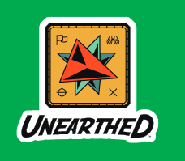
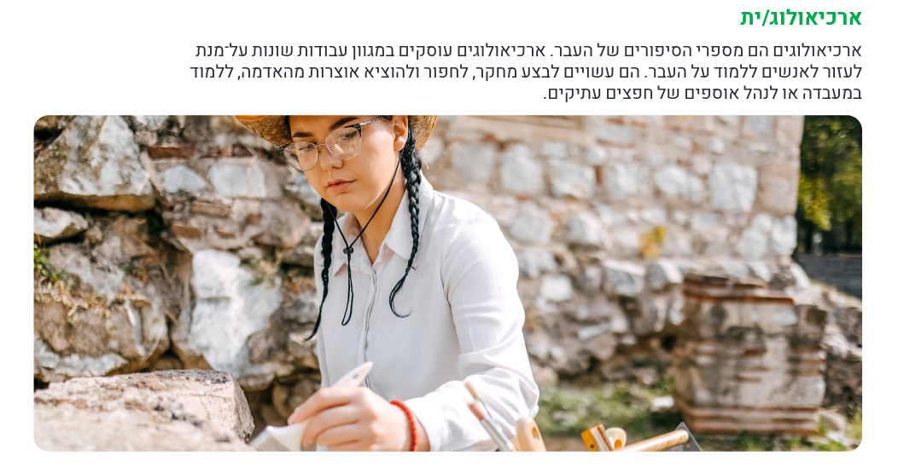
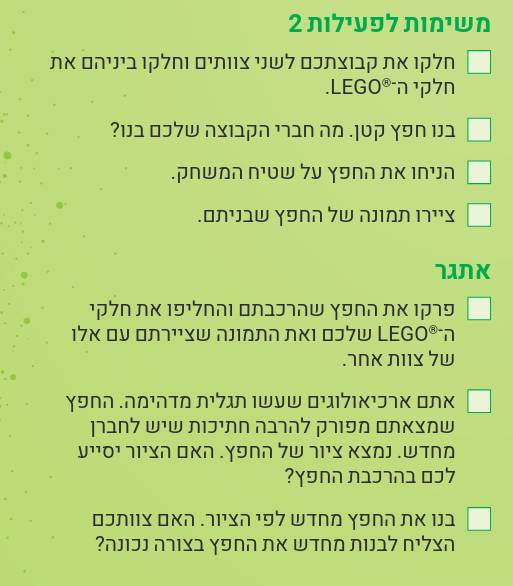
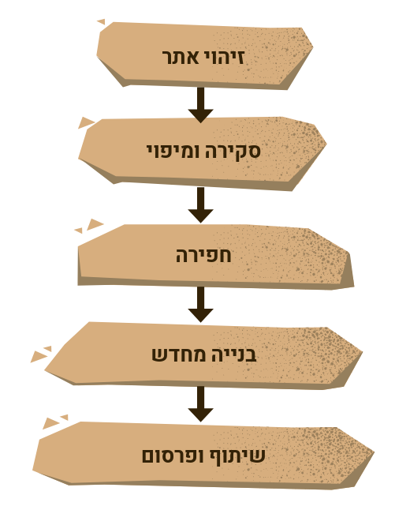
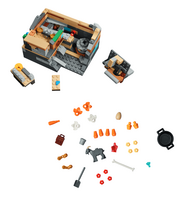
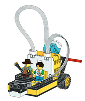
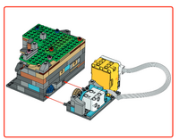

2026 PLANNING#
חקרו את העבר כדי לגלות את העתיד.

year topic#
matrials#
links#
les0: מבוא לפני ערכות#
year movie + year subject clips ( les01 drive )
intro builds:
les1 : הרפתקה ארכיאולוגית#
choose name to the team
start with the comics
what is archaeology?

UNEARTHED חקר הנושא
למידה על איך בני האדם חיו בעבר עשויה לעזור לנו לקבל החלטות טובות יותר בעתיד.
ארכיאולוגים עשויים לרצות לדעת:
מי חיו שם?
באילו כלים הם השתמשו?
מה הם אכלו?
איזה סוגי בתים הם בנו?
באילו משחקים הם שיחקו?
🔨 lego 7-12 : פעילות בנייה חופשית בנושא ארכיאולוגיה

les2: התהליך הארכיאולוגי#

כיצד ארכיאולוגים יודעים היכן לחפור?
מהם חלק מהכלים בהם משתמשים ארכיאולוגים?
כיצד מכ”ם יכול לעזור לארכיאולוגים למצוא חפצים?
🔨 build radar model from kit 1 (kit only no electronics)
🔨🔨 build some digging ideas
les3: הצלת שריד#
אילו כלים אחרים משמשים ארכיאולוגים.
אילו כלים נדרשים כדי לחפור?
באילו כלים משתמשים לתיעוד או לחקר חפצים?
🔨 build kit (kit only no electronics) 2+5 :

דברו עם קבוצתכם על החפצים שבתוך דגם
החפירה. איך לדעתכם השתמשו בחפצים אלו?
התאמנו בהסרת שכבות ובחפירת הדגם. האם
תוכלו להרכיב אותו בחזרה?
בחנו את החדרים השונים בתוך הדגם ודונו עם
קבוצתכם כיצד השתמשו בהם.
les4: - rotate and locate#
הקבוצה תלמד כיצד ארכיאולוגים משתמשים בטכנולוגיה באתר חפירות
🔨 basic: Classic Carousel (+change spin direction)
דברו עם חברי הקבוצה על איך שהדגם יכול לסייע
לארכיאולוגים. אילו שינויים הייתם עושים?
rebuild model to help on site : סוקרי אתרים
in no other ideas :
בחרו חפץ שנמצא על שטיח המשחק שמעניין אתכם.
שנו את התוכנית כך שהדגם יסתובב ויעצור מעל החפץ שבחרתם.
🔨🔨 advanced: drive control seperate engines
les5 : sort by sensors#
הקבוצה תלמד כיצד ניתן להשתמש בחיישנים כדי לזהות דברים שארכיאולוגים לא יכולים לראות באתר חפירות.
חקר כיצד ארכיאולוגים משתמשים בטכנולוגיה
ארכיאולוגים משתמשים בחיישנים כדי ללמוד על חפצים מבלי לפגוע בהם.
חיישנים מסוימים יכולים לזהות אילו חומרים נמצאים בחפץ, או אם משהו מוסתר בתוכו.
🔨 basic: Animal Alarm
for spike work on voice alarm on color sensor
change the model to help on site : sort by color the found objects “בלשי עפר”
🔨🔨 advanced:
???TODO??? : distance sensor
les6 : site vechiles#
הקבוצה תלמד כיצד ארכיאולוגים מטפלים בחפצים ומזיזים אותם באתר חפירות.
חקר כלי רכב המשמשים באתרי חפירות
🔨 basic#
-
change to go backward
update the model to used on site
try : שהדגם ינוע בין שני החפצים שבחרתם. נסו לעצור את הדגם על אחד החפצים.
🔨🔨 advanced: דגם חפירות#
build site vehicle
Archaeological site vehicles are broadly divided into two categories:
those used for fieldwork (like sturdy 4x4 vehicles and specialized minivans)
robotic systems for surveying and excavation,
Unmanned Aerial Vehicles (UAVs)
Remotely Operated Vehicles (ROVs)
האם תוכלו לשנות את הרובוט כך שיסע עם ארבעה גלגלים?
האם תוכלו לבנות משאית שתעביר חומר רב מאתר החפירות?
כיצד תוכלו לתכנת את הרובוט שלכם כך שיעצור על אחד מהחפצים?
על הקבוצה לתרגל את מיקום הרובוט כך שיגיע למיקום מסוים על שטיח המשחק.
אתם יכולים להציב מכשול על שטיח המשחק כדי לאתגר את הקבוצה לתכנת את הרובוט שלה להסתובב.
אתגר1 בין קבוצתי: העברת משקל רב ביותר
les7 : tools for archeologists#
הקבוצה תבנה כלים בהם משתמשים ארכיאולוגים באתרי חפירות
אילו כלים נדרשים לחפירה? אילו כלים נדרשים לתיעוד או לחקר חפצים?
🔨 build : להמציא כלי חדש בלגו חופשי
talk about the concept of radar for next lesson
les8 : radar#
מהו מכ”מ
🔨 basic build activity מחפשי אותות

???TODO??? : spike updated instructions
🔨🔨 advanced
build the basic model
combine distance sensor and color sensor to find objects on the field
אתגר2 בין קבוצתי: חיaפוש אובייקט ידוע במתאר לא ידוע ללא מפה
les9: professions#
הקבוצה תלמד על מקצועות הקשורים לארכיאולוגיה
לאילו מקומות נשלחים חפצים כדי שאנשים יוכלו ללמוד אותם?
אילו מקצועות תומכים בעבודתם של ארכיאולוגים?
בחרו במקצוע המעניין אתכם. איזה סוג של הכשרה נדרשת כדי לעסוק בו?
באילו כלים משתמשים במקצוע זה?
concepts builds#
🔨 build: תכנות דגם אתר החפירות#
add electronics to the model from kit 2+5:

??? TODO ??? spike updated instructions
run the sw
control speed
refactor the moving part mechanism in other ways
add custom group symbols representing the team
les10 : preapre for event#
do הדגם הקבוצתי
do הפוסטר הקבוצתי
do הכנה לאירוע